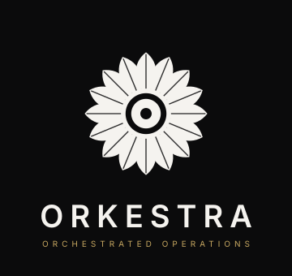
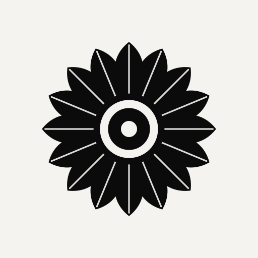

Sistema de marca construído em torno do kikumon — o crisântemo de 16 pétalas da tradição japonesa, símbolo de resistência, longevidade e soberania. Aqui ele atende a três funções simultâneas: ponte pessoal com a herança cultural da fundadora, ícone técnico de orquestração radial e selo institucional que sobrevive do favicon 16px ao outdoor.
Aplicação padrão. Símbolo à esquerda, wordmark à direita. Use sempre que houver espaço horizontal confortável — websites, cabeçalhos de documento, assinatura de e-mail, dashboards.
Duas variações para contextos específicos: Stacked para layouts verticais (posters, capas, slides), Symbol-only para situações onde a marca já está contextualizada (app icon, avatar, selo).

A geometria radial de 16 pétalas mantém a silhueta reconhecível mesmo em 16 × 16 pixels. Em tamanhos pequenos use a variante favicon (sem fold lines); em tamanhos médios e grandes use o symbol com detalhamento completo.
Off-white para tela, preto sobre claro para impressão, ouro champagne para cerimonial. Nada fora desta tríade sem aprovação — a paleta é o DNA.

Todas as aplicações da marca vivem dentro destes quatro tons. Nenhuma cor secundária é introduzida sem atualização deste manual.
Enquanto o investimento em Söhne (o objetivo) não é feito, usamos Inter como placeholder — mesma família geométrica, espaçamento semelhante, gratuita. Sempre semibold 600 para wordmark, com tracking aumentado a 8–9 unidades.
| Wordmark | ORKESTRA |
| Tagline | ORCHESTRATED OPERATIONS |
| Título / Hero | A orquestra que rege sua operação |
| Subtítulo | Automação + julgamento humano, em harmonia. |
| Corpo | Da primeira mensagem do lead até o pagamento da última parcela, a operação é regida por um maestro invisível. |
| Monospace · dados | R$ 142.350,00 · CMV 31.2% · margem 68.8% |
菊 (kiku) — crisântemo. Flor do outono, símbolo de resistência que floresce quando outras murcham. Na tradição imperial japonesa, a flor que aguenta o frio, a ordem que persiste através das estações.
秩序 (chitsujo) — ordem, organização, orquestração. Conceito central na filosofia operacional japonesa: a harmonia vem da disciplina, não do acaso. É exatamente o que Orkestra entrega aos seus clientes BPO.
Juntar os dois — resistência + ordem — no símbolo mais reconhecível da cultura japonesa não é decoração. É um compromisso: Orkestra rege a operação como o kiku rege o outono — com precisão, longevidade e soberania discreta.
| Lockup horizontal | brand/mark-horizontal.svg |
| Lockup stacked | brand/mark-stacked.svg |
| Símbolo mestre | brand/mark-symbol.svg |
| Favicon otimizado | brand/mark-favicon.svg |
| Variante ouro | brand/mark-gold.svg |
| Variante impressão | brand/mark-print.svg |